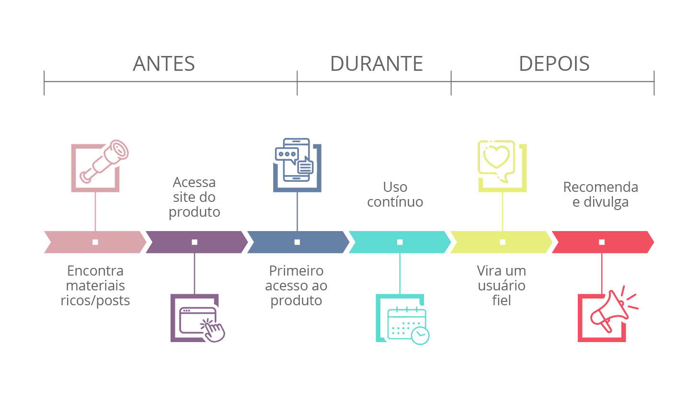

Módulo 2
Módulo 2: Pesquisa com Usuários
Aprenda a identificar necessidades, comportamentos, dores e expectativas dos usuários por meio de pesquisas e da construção de artefatos analíticos.

Conteúdo Programático
Acompanhe as aulas correspondentes a este módulo.
-
Aula 1
Aula 1 - Métodos de Pesquisa
Investigue as abordagens qualitativas e quantitativas adequadas para coleta de dados de mercado e comportamento.
-
Aula 2
Aula 2 - Entrevistas Qualitativas
Domine técnicas de escuta ativa e condução de conversas investigativas sem induções ou vieses.
-
Aula 3
Aula 3 - Mapas de Empatia
Estruture o contexto psicológico, dores e ganhos do usuário através de quadrantes sensoriais detalhados.
-
Aula 4
Aula 4 - Personas e Jornadas
Sintetize dados de pesquisa criando perfis comportamentais e linhas do tempo emocionais de interação com o produto.
-
Aula 5
Aula 5 - Análise de Dados
Interprete as evidências coletadas para extrair insights acionáveis que direcionem a tomada de decisão no design.